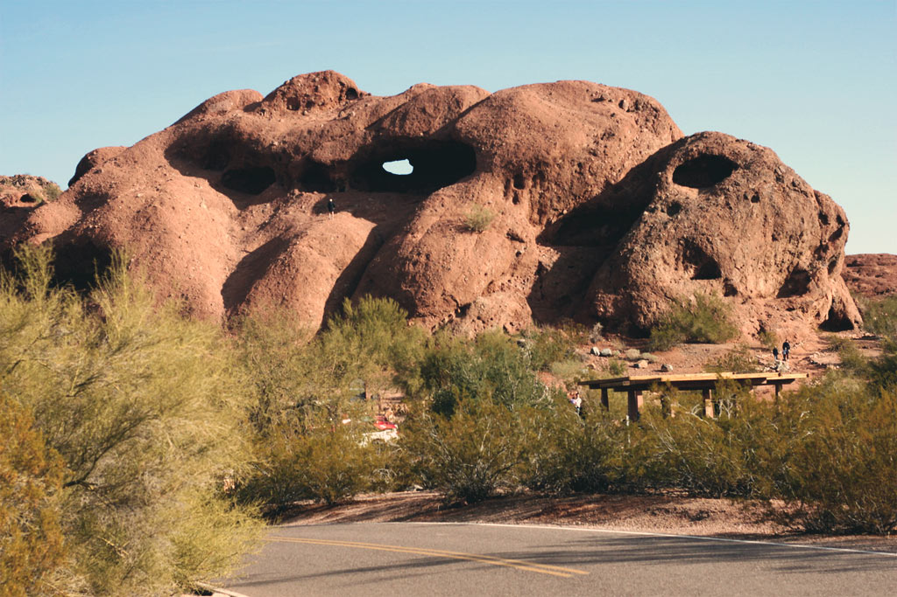
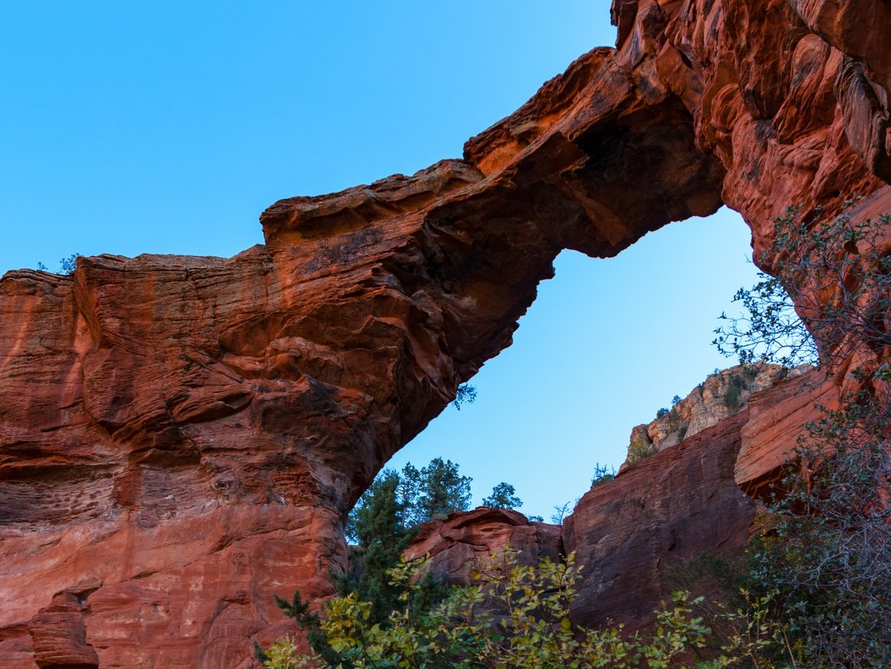

Mormon Loop to National Trail Loop is a 4.7 mile heavily trafficked loop trail located near Phoenix, Arizona that features beautiful wild flowers and is rated as moderate. The trail offers a number of activity options and is accessible year-round. Dogs are also able to use this trail but must be kept on leash.
Hole in the Rock

Hole in the Rock Trail is a 0.3 mile moderately trafficked out and back trail located near Phoenix, Arizona that offers scenic views and is good for all skill levels. The trail is primarily used for hiking and walking and is accessible year-round. Dogs are also able to use this trail but must be kept on leash.
Devil's Bridge Trail

Devils Bridge Trail is a 4.2 mile heavily trafficked out and back trail located near Sedona, Arizona that features beautiful wild flowers and is rated as moderate. The trail is primarily used for hiking and nature trips. Dogs are also able to use this trail but must be kept on leash.
Soldier Pass Trail
Soldier Pass Trail is a 4.1 mile heavily trafficked out and back trail located near Sedona, Arizona that features a river and is rated as moderate. Through this trail you will also pass by Devil's Kitchen Sinkhole and Seven Sacred Pools. Soldier Pass Cave is also accessible through this trail. Dogs are also able to use this trail but must be kept on leash.